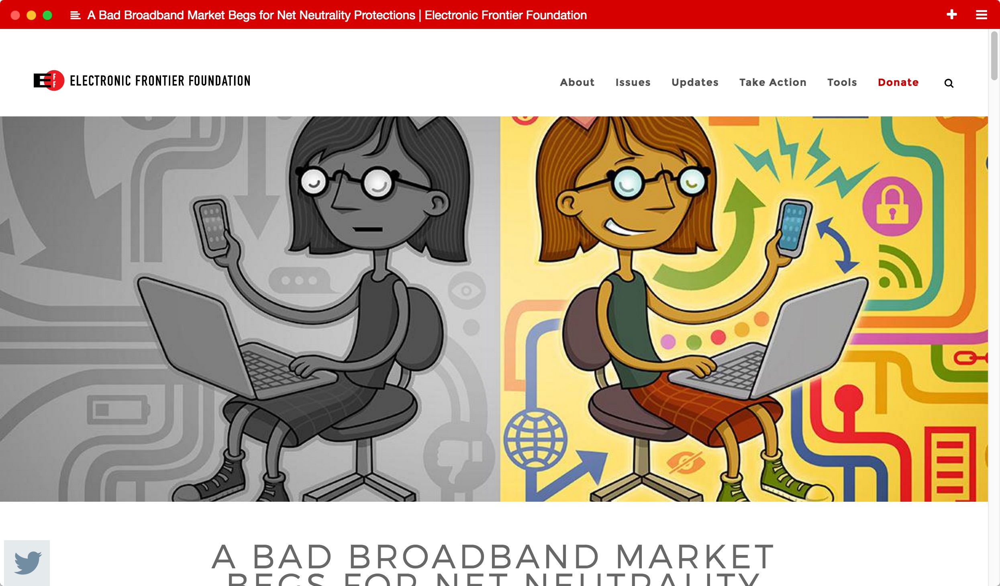
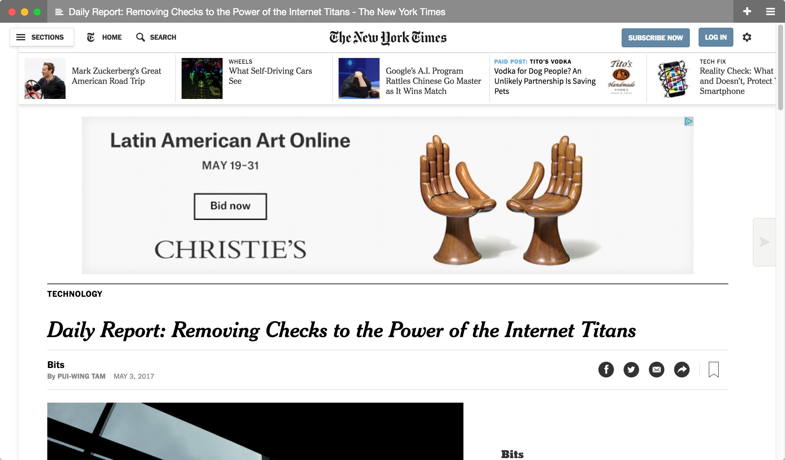
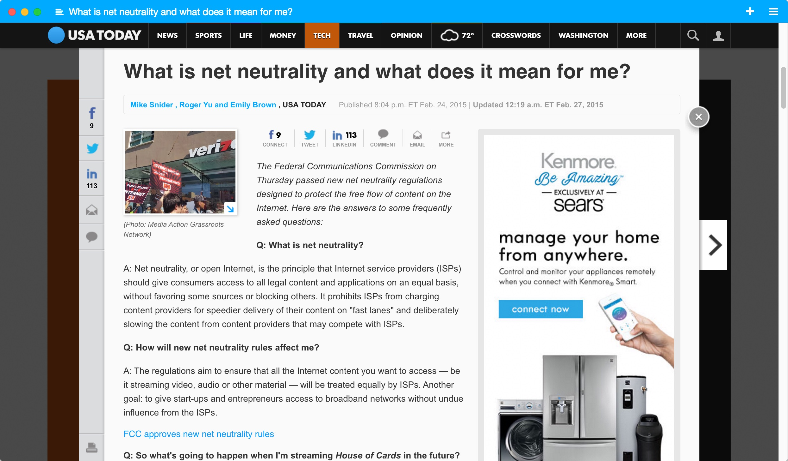
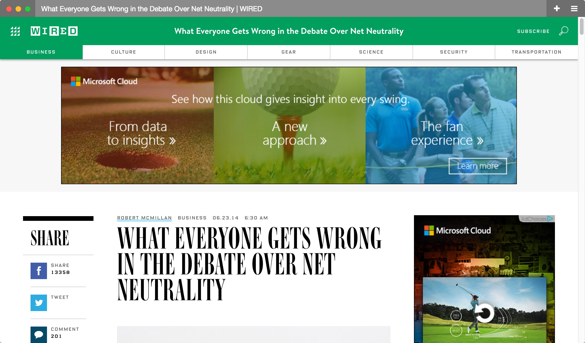

Argument: The controversy over whether the FCC should regulate the Internet as a public utility has long-standing implications regarding the right to free expression and the regulation of Internet monopolies.
Introduction
Net Neutrality was first coined by Columbia professor Tim Wu in his paper Network Neutrality, Broadband Discrimination in the year 2002. In this paper, he defined net neutrality as "an Internet that does not favor one appliction over others"(Wu 5). He argues that the FCC should regulate the Internet as an open-access utility, instead of allowing ISPs to self-regulate, which would allow ISPs to charge different amounts of money for different website loading speeds. In the early days of the Internet, the Internet was ultimately controlled by cable companies with their modems. However, as the Internet became much more widespread, the argument about whether it should be a utility has become more widespread. Net neutrality really began to pick up steam after the 2008 Comcast debacle, where Comcast started to block bittorrent traffic due to the types of files shared via bittorrent (large media files such as copyrighted movies) essentially slowing down Comcast speeds. The result of this was the 2010 Internet Order, which established a set of principles for ISPs to follow. This was eventually overturned by the D.C. Circuit on the premise that the FCC did not have regulatory authority over information services, what ISPs were classified as. This led to further legalese and jargon getting thrown, with the eventual result being Obama and the FCC endorsing Title II which means that the FCC now could do the things it needed to do, as ISPs were now classified as a telecommunicatons service. In 2015 the FCC creates a set of rules known as the 2015 Open Internet Order. Some believed that these rules did not stand up to the First Amendment, and brought it to court. The D.C. Circuit Court refused to hear the case, leaving the regulations to stand. Currently the fight is about Title II. Although Comcast, Verizon, and other ISPs state that they now support net neutrality, they want to get rid of the title II classification, which as decided by the D.C. appeals court, would effectively render the FCC mute. There is also another debacle over whether ISPs should have the ability given that there are two different types of classifications of information services: information service pipelines (a.k.a. those that do not modify the information) and enhanced information pipelines (such as voicemail). Enhanced information pipelines can charge what they want essentially, making the enhanced information pipeline classification desirable. Things aren't so black and white however, as many of the original creators of what can be considered the "Internet" are critics of net neutrality. Alfred E. Kahn, in particular, points to his experience deregulating airlines, and how it led to beneficial competition. Additionally, Robert Kahn argues along the business line that net neutrality inhibits innovation. Even Tim Wu acknowledges that the argument isn't as simple as the press likes to make it seem, as packets are not equal in terms of their speed and underlying infrastructure. Some companies already get privileged access to ISPs, and are able to route their traffic through content delivery networks (CDNs). Google is notable for this partnership, although many websites (incuding my own personal website) use companies (such as RackSpace, Cloudflare, Maxcdn, or fastly) whose sole purpose is to provide CDNs (and thus decrease website latency).
Impact
The net neutrality controversy has an impact on the majority of the first-world given the relative abundance of people with Internet access. Over 50% of people use the web to browse a set 30 sites. If companies are allowed to charge different prices for speeds to different websites it ultimately enfranchises those in power over say a Stuyvesant startup. For example, an ISP can have different packages of which the faster speed is more easily paid by an enormous enterprise such as Google, leaving the small business competitor behind. Research has shown that speed delays of over 250ms has led to over 50% of participants ultimately not visiting the site. ISPs can also demand money from alternatives to in-house options. The most notable example of this is that of Netflix who had a rife with Comcast when Comcast deliberately slowed down Netflix speeds to further bolster the viewers for its own tv subscription service. This is an example of zero rating, a practice by which an ISP has practices that give selective advantages to its own products over those of potential Internet competitors. To illustrate this, is the following choose-your-adventure available by clicking the button below.
In the News




Historical Context
According to Tim Wu's book, The Master Switch– The Rise and Fall of Information Empires, there is context for this debate about net neutrality. Wu points out that there is a certain cycle with technology: it is first invented–
hobbyists tinker with it
it starts to catch on and become more mainstream
corporations begin offering it, creating advances and competition
Some corporations begin buying others.
Eventually monopolies are formed.
Wu uses the TV and radio as evidence, pointing out how the major broadcast networks: that of ABC, CBS, NBC, and FOX ultimately dominate with the consolidation of power, and how radio has also developed along similar lines with Sirium/XM and iHeartMedia (formerly known as clear channel).
This is still ongoing
After last year's election, the U.S. had a change in presidencies. This president appointed a new FCC commissioner, Ajit Pai, a former Verizon lawyer. After last year, where former FCC Chairman Tom Wheeler advocated stronger net neutrality laws, Pai proposes deregulation for the advance of industry. This is in a 75 page resolution, titled Restoring Internet Freedom. As this is current, the FCC is allowing people to express their comments regarding this issue. To do so, follow the following steps.
For proceeding, type 17-108 to get the dropdown that states Restoring Internet Freedom.
Fill out the rest of the form, and go through the confirmation steps.
Bibliography
Lohr, Steve. "For Impatient Web Users, an Eye Blink Is Just Too Long to Wait." The New York Times. The New York Times, 29 Feb. 2012. Web. 28 May 2017.
"The Principle That the Company That Connects You to the Internet Does Not Get to Control What You Do on the Internet." Whatisnetneutrality.org. N.p., n.d. Web. 28 May 2017.
Reardon, Marguerite. "Net Neutrality: How We Got from There to Here." CNET. N.p., 24 Feb. 2015. Web. 28 May 2017.
Wu, Tim. The Master Switch: The Rise and Fall of Information Empires. London: Atlantic, 2012. Print.
Lohmann, Fred Von. "FCC Rules Against Comcast for BitTorrent Blocking." Electronic Frontier Foundation. N.p., 06 Oct. 2011. Web. 09 June 2017.
Svensson, Peter. "Comcast Blocks Some Internet Traffic." The Washington Post. WP Company, 19 Oct. 2007. Web. 09 June 2017.
Kahn, Alfred E. "A Democratic Voice of Caution on Net Neutrality." A Democratic Voice of Caution on Network Neutrality. N.p., Oct. 2006. Web. 09 June 2017.
Iskandar, Tatiana, Lee Semien, and Daniel Vinegrad. "Net Neutrality." Net Neutrality. Stanford University, n.d. Web. 09 June 2017.
Levy, Steven. "Google Throws Open Doors to Its Top-Secret Data Center." Wired. Conde Nast, 03 June 2017. Web. 09 June 2017.